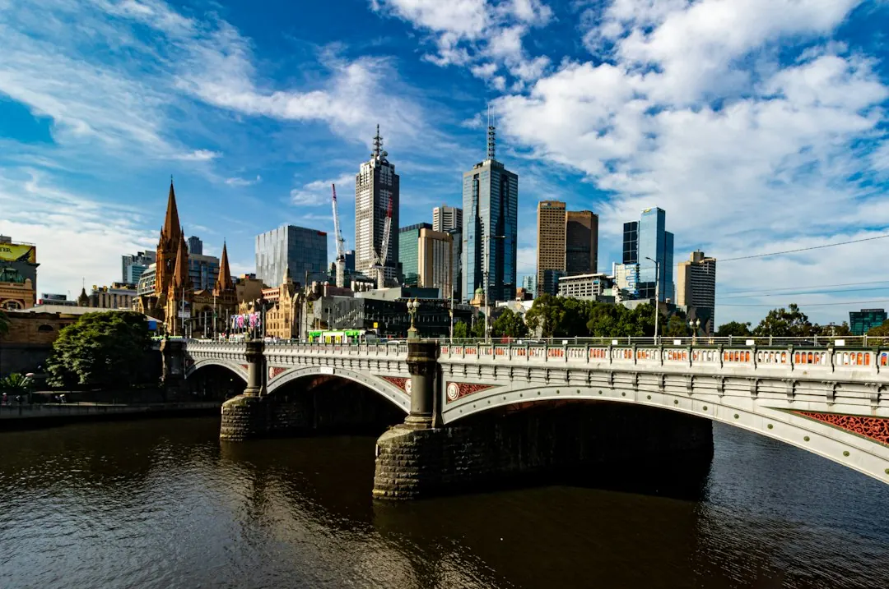

A single-phase switchboard upgrade in Melbourne typically costs $800 to $3,500+, while a three-phase upgrade typically costs $3,000 to $5,000+, depending on circuit count, wiring condition, scope and complexity. The work may replace ceramic fuses with circuit breakers, safety switches or RCBOs. A licensed electrician should assess the existing board, provide the final quote, complete the installation and issue a Certificate of Electrical Safety. Asbestos-backed boards require careful handling under Victorian rules.
For homeowners comparing switchboard upgrades melbourne options, the practical decision comes down to the board's age, circuit protection, power requirements, wiring condition and the certification required after the work.
Switchboard Upgrades Melbourne Explained
Switchboard Upgrades Melbourne describes older Melbourne homes with ceramic fuse-type boards, rewireable fuses, no safety switches and limited spare capacity. Those features can become relevant when circuits trip, fuses blow or appliances such as a heater and kettle are used together.
The visual age of a board is only one part of the decision. Ask the assessing electrician to check the switchboard, wiring and circuits, then explain whether the work is a straightforward replacement or a broader upgrade. A board with asbestos backing needs a separate conversation about removal and disposal before any quote is accepted.
- Ask whether the existing board uses ceramic fuse carriers or modern breakers.
- Confirm which circuits will receive safety switch protection.
- Ask whether the current wiring condition changes the proposed scope.
Choose protection for the property
A single-phase board is described as the common arrangement for homes, with modern circuit breakers and safety switches replacing old fuses. The upgrade can also leave room for future circuits. Larger homes, workshops and properties with higher-draw appliances may require three-phase power, but the assessing electrician must determine whether that applies.
An RCD safety switch is designed to cut power when it detects current leaking to earth. Circuit breakers protect individual circuits against overload, while an RCBO combines overload protection and safety switch protection in one device. The useful comparison is not simply the number of devices, but which circuits need protection and how the household uses electricity.
If solar, a smart meter or new appliances are planned, raise that before the quote is prepared. The board may need suitable capacity and modern circuit protection so the planned equipment can be accommodated.
Handle older and asbestos-backed boards carefully
Replacing a ceramic fuse box retires worn fuse carriers in favour of a modern board designed around current Victorian electrical regulations. That can make future circuit additions easier, but the electrician still needs to inspect the existing wiring and determine whether extra work is required.
Some older boards have asbestos backing. The published guidance states that a trained electrician may handle a small, sound, non-friable board within strict limits. Otherwise, a licensed asbestos removalist is required. This is a scope question to settle before work starts, because removal and disposal can affect the quote and the trades involved.
Ask for the proposed treatment of the backing material in writing. Also ask who is responsible for disposal, whether the board can be safely isolated during the assessment and what documentation will be issued when the installation is complete.
For a closely related explanation of replacing an older board, see the guide to switchboard replacement in Melbourne.
Understand the quote and completion process
The stated typical range for a single-phase upgrade is $800 to $3,500+, depending on circuit count and existing wiring condition. A three-phase upgrade is typically $3,000 to $5,000+, depending on scope and complexity. These are guide figures, not a final offer. The assessing electrician provides the actual quote after inspecting the installation.
A useful quote should identify the board type, number of circuits, safety switch or RCBO arrangement, treatment of any asbestos backing, likely wiring work and whether solar or smart meter compatibility is included. It should also state what is excluded, how variations will be handled and what certificate follows completion.
The described process has three stages: submit details about the existing board, receive an assessment and quote from a licensed electrician, then complete the upgrade and receive a Certificate of Electrical Safety. Main switchboard replacement is prescribed work, so an independent licensed electrical inspector also checks it under Energy Safe Victoria's certificate guidelines.
Who this guide applies to
This guide is for Melbourne homeowners considering an old fuse box replacement, safety switch installation, a single-phase board upgrade, three-phase power or preparation for solar and smart meter equipment. It is also relevant where an older board may have asbestos backing.
It does not determine whether a particular property needs three-phase power, whether existing wiring must be replaced or whether asbestos removal is required. Those decisions depend on the site assessment. Before booking, prepare the property details, note any repeated tripping or blown fuses, list planned high-demand appliances and ask which parts of the proposed work are prescribed.
Use the quote to compare scope, protection, certification and handling of older materials, rather than comparing a headline figure alone.
- Describe the existing board. Provide the property details and explain any blown fuses, repeated tripping, missing safety switches or planned electrical additions.
- Arrange an assessment. Have a licensed electrician inspect the switchboard, wiring and circuits before accepting a scope or price.
- Check the written quote. Confirm circuit protection, board type, asbestos treatment, compatibility work, exclusions and variation arrangements.
- Complete and certify the work. After installation, confirm that the Certificate of Electrical Safety is issued and ask how prescribed inspection requirements are handled.
| Situation | Likely discussion | Question to ask |
|---|---|---|
| Ceramic fuse board in a standard home | Single-phase board, breakers and safety switches | Which circuits need protection and is the wiring suitable? |
| Higher-demand property or workshop | Possible three-phase assessment | What equipment requires three-phase power? |
| Older board with suspected asbestos backing | Removal and disposal planning | Who handles the material and what limits apply? |
| Planned solar or smart meter | Compatibility and capacity review | What changes are needed before installation? |
Common questions
What does a typical single-phase upgrade cost? The published guide gives a typical range of $800 to $3,500+, depending on circuit count and existing wiring condition. The assessing electrician provides the final quote.
When might three-phase power be considered? Larger homes, workshops and properties with higher-draw appliances may need three-phase power. The electrician must assess the property and scope the work.
What does an RCD safety switch do? An RCD safety switch is designed to cut power when it detects current leaking to earth. The electrician can explain which circuits require protection.
What happens if the board has asbestos backing? The material needs careful handling and disposal under Victorian asbestos rules. A trained electrician may handle a small, sound, non-friable board within strict limits, otherwise a licensed asbestos removalist is required.
Is certification issued after the upgrade? The described process includes a Certificate of Electrical Safety on completion. Main switchboard replacement is prescribed work and is independently inspected under Energy Safe Victoria's certificate guidelines.
This guide covers Melbourne switchboard assessment, protection options, older-board handling, indicative costs and certification.